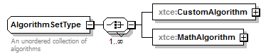
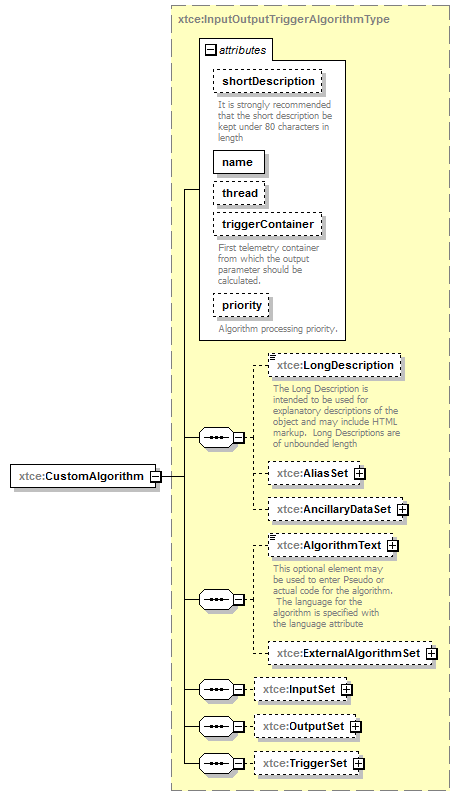
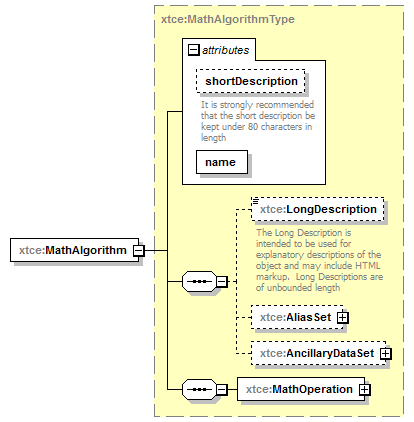

| diagram |  | ||
| namespace | http://www.omg.org/space/xtce | ||
| properties |
|
||
| children | xtce:CustomAlgorithm xtce:MathAlgorithm | ||
| used by |
|
||
| annotation |
|
||
| source | <complexType name="AlgorithmSetType" mixed="false"> <annotation> <documentation xml:lang="en">An unordered collection of algorithms</documentation> </annotation> <choice maxOccurs="unbounded"> <element name="CustomAlgorithm" type="xtce:InputOutputTriggerAlgorithmType"/> <element name="MathAlgorithm" type="xtce:MathAlgorithmType"/> </choice> </complexType> |
| diagram |  | ||||||||||||||||||||||||||||||||||||||||||
| namespace | http://www.omg.org/space/xtce | ||||||||||||||||||||||||||||||||||||||||||
| type | xtce:InputOutputTriggerAlgorithmType | ||||||||||||||||||||||||||||||||||||||||||
| properties |
|
||||||||||||||||||||||||||||||||||||||||||
| children | xtce:LongDescription xtce:AliasSet xtce:AncillaryDataSet xtce:AlgorithmText xtce:ExternalAlgorithmSet xtce:InputSet xtce:OutputSet xtce:TriggerSet | ||||||||||||||||||||||||||||||||||||||||||
| attributes |
|
||||||||||||||||||||||||||||||||||||||||||
| source | <element name="CustomAlgorithm" type="xtce:InputOutputTriggerAlgorithmType"/> |
| diagram |  | ||||||||||||||||||||
| namespace | http://www.omg.org/space/xtce | ||||||||||||||||||||
| type | xtce:MathAlgorithmType | ||||||||||||||||||||
| properties |
|
||||||||||||||||||||
| children | xtce:LongDescription xtce:AliasSet xtce:AncillaryDataSet xtce:MathOperation | ||||||||||||||||||||
| attributes |
|
||||||||||||||||||||
| source | <element name="MathAlgorithm" type="xtce:MathAlgorithmType"/> |